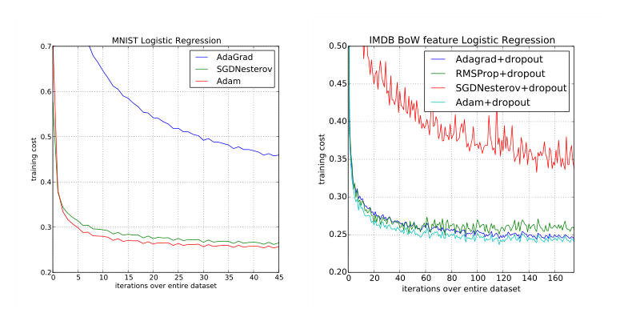
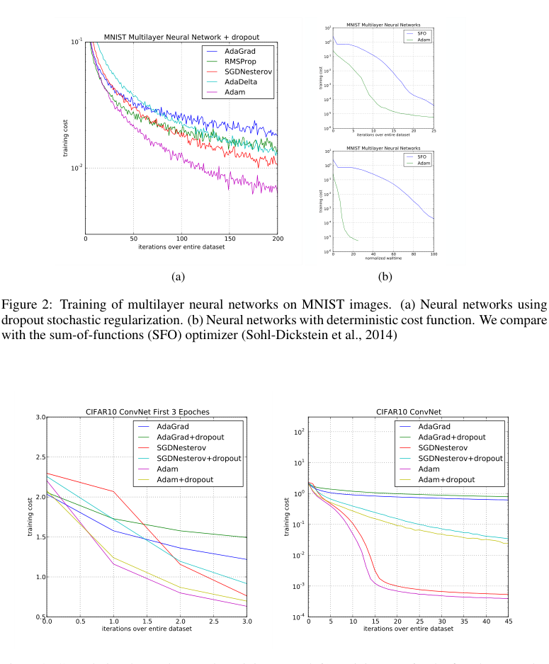
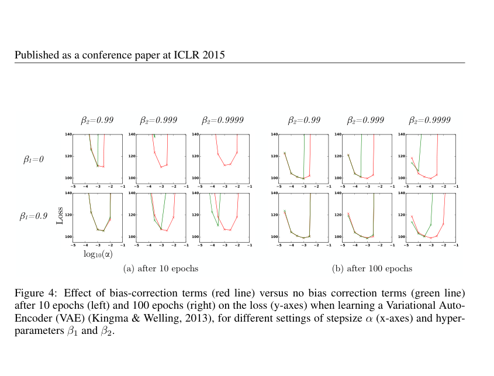

Adam: A Method for Stochastic Optimization

| Architecture Type | First-Order Stochastic Optimizer |
|---|---|
| Key Innovation | Adaptive learning rates for each parameter using estimates of first and second moments of the gradients. |
| Performance Metric | Faster convergence and lower loss across a wide range of deep learning tasks. |
| Computational Efficiency | O(1) memory per parameter; computationally efficient with small constant overhead. |
| Venue | International Conference on Learning Representations |
| Year | 2014 |
| Citations | 164663 |
| DOI | Link |
Adam (Adaptive Moment Estimation) is an algorithm for first-order gradient-based optimization of stochastic objective functions, based on adaptive estimates of lower-order moments. By combining the advantages of AdaGrad, which works well with sparse gradients, and RMSProp, which works well in online and non-stationary settings, Adam has become the default optimizer for deep learning. Its computational efficiency, low memory requirements, and invariance to diagonal scaling of the gradients make it well-suited for large-scale data and parameter-heavy models.
Adaptive Moment Estimation
The Adam algorithm maintains exponentially moving averages of the gradient ($m_t$) and the squared gradient ($v_t$), which represent estimates of the first moment (the mean) and the second raw moment (the uncentered variance) of the gradients, respectively.
Two hyper-parameters $\beta_1, \beta_2 \in [0, 1)$ control the exponential decay rates of these moving averages. By utilizing both the direction (momentum) and the magnitude (adaptive scaling) of the gradients, Adam can naviltiplicative unit that controls information flow.">gate complex loss landscapes more effectively than standard stochastic gradient.">gradient descent (SGD).
Bias Correction
A unique feature of Adam is the use of initialization bias correction. Since the moving averages $m_t$ and $v_t$ are typically initialized as vectors of zeros, they are biased towards zero, especially during the initial time steps or when the decay rates are small (i.e., $\beta_1$ and $\beta_2$ are close to 1).
The authors derived bias-corrected estimates $\hat{m}_t$ and $\hat{v}_t$ to counteract this effect. This correction ensures that the moments are more accurate early in the training process, leading to more stable updates and preventing the algorithm from 'stalling' at the beginning of optimization.
Hyper-parameters and Stability
Adam is known for being robust to its hyper-parameters. The default values suggested in the paper—$\alpha=0.001$, $\beta_1=0.9$, $\beta_2=0.999$, and $\epsilon=10^{-8}$—work well for most deep learning problems.
The algorithm's update rule is conceptually similar to a 'signal-to-noise ratio' (SNR) where the step size is determined by how much the gradient signal outweighs its uncertainty. This property makes Adam particularly effective for non-stationary objectives and problems with very noisy or sparse gradients.
Adam vs. Other Optimizers
The paper compares Adam to other popular optimization methods, including SGD with Nesterov momentum, AdaGrad, and RMSProp. Across experiments on MNIST, CIFAR-10, and various neural network architectures, Adam consistently demonstrated faster convergence and reached lower training loss.
While SGD with momentum may sometimes achieve slightly better generalization on certain vision tasks, Adam's ease of use and consistent performance have made it the industry standard for training large-scale models like Transformers and GANs.
Concept Breakdown
The exponentially decaying average of past gradients, providing momentum to accelerate descent in the correct direction.
The exponentially decaying average of past squared gradients, used to scale the learning rate for each individual parameter.
A mathematical adjustment made to the moment estimates to compensate for their initialization at zero.
The step size used for each parameter update, which Adam automatically adjusts based on the moment estimates.
A small constant added to the denominator to prevent division by zero and ensure numerical stability.
Mathematics
Adam Update Rule
| Symbol | Meaning |
|---|---|
| $\theta_t$ | Parameters at time step t |
| $\alpha$ | Learning rate / step size |
| $\hat{m}_t$ | Bias-corrected first moment estimate |
| $\hat{v}_t$ | Bias-corrected second moment estimate |
Moment Estimates
| Symbol | Meaning |
|---|---|
| $g_t$ | Gradient of the objective function at time step t |
| $\beta_1, \beta_2$ | Decay rates for the first and second moments |
Figures and Explanations

Comparison of Adam with other optimizers on the MNIST dataset, showing Adam's faster convergence in terms of training cost.

Evaluation of different optimizers on a multi-layer fully connected network, demonstrating Adam's robustness across different architectures.

See Also
References
- Auto-Encoding Variational Bayes - Diederik P. Kingma, M. Welling (2013)
- Fast large-scale optimization by unifying stochastic gradient and quasi-Newton methods - Jascha Narain Sohl-Dickstein, Ben Poole et al. (2013)
- Generating Sequences With Recurrent Neural Networks - Alex Graves (2013)
- Fast dropout training - Sida I. Wang, Christopher D. Manning (2013)
- On the importance of initialization and momentum in deep learning - I. Sutskever, James Martens et al. (2013)
- Recent advances in deep learning for speech research at Microsoft - L. Deng, Jinyu Li et al. (2013)
- Speech recognition with deep recurrent neural networks - Alex Graves, Abdel-rahman Mohamed et al. (2013)
- Revisiting Natural Gradient for Deep Networks - Razvan Pascanu, Yoshua Bengio (2013)
- ADADELTA: An Adaptive Learning Rate Method - Matthew D. Zeiler (2012)
- ImageNet classification with deep convolutional neural networks - A. Krizhevsky, I. Sutskever et al. (2012)
- Deep Neural Networks for Acoustic Modeling in Speech Recognition: The Shared Views of Four Research Groups - G. Hinton, L. Deng et al. (2012)
- Improving neural networks by preventing co-adaptation of feature detectors - Geoffrey E. Hinton, Nitish Srivastava et al. (2012)
- No more pesky learning rates - T. Schaul, Sixin Zhang et al. (2012)
- Non-Asymptotic Analysis of Stochastic Approximation Algorithms for Machine Learning - F. Bach, É. Moulines (2011)
- Learning Word Vectors for Sentiment Analysis - Andrew L. Maas, Raymond E. Daly et al. (2011)
- Adaptive Subgradient Methods for Online Learning and Stochastic Optimization - John C. Duchi, Elad Hazan et al. (2011)
- A fast natural Newton method - Nicolas Le Roux, A. Fitzgibbon (2010)
- Online Convex Programming and Generalized Infinitesimal Gradient Ascent - Martin A. Zinkevich (2003)
- Natural Gradient Works Efficiently in Learning - S. Amari (1998)
- Acceleration of stochastic approximation by averaging - Boris Polyak, A. Juditsky (1992)